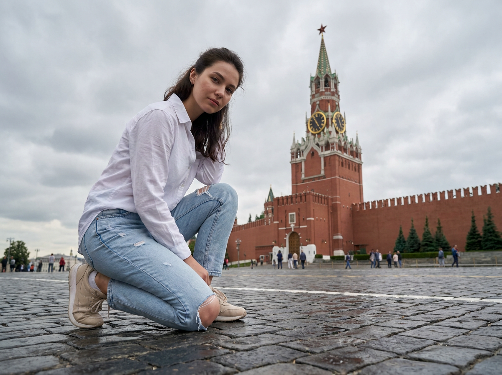
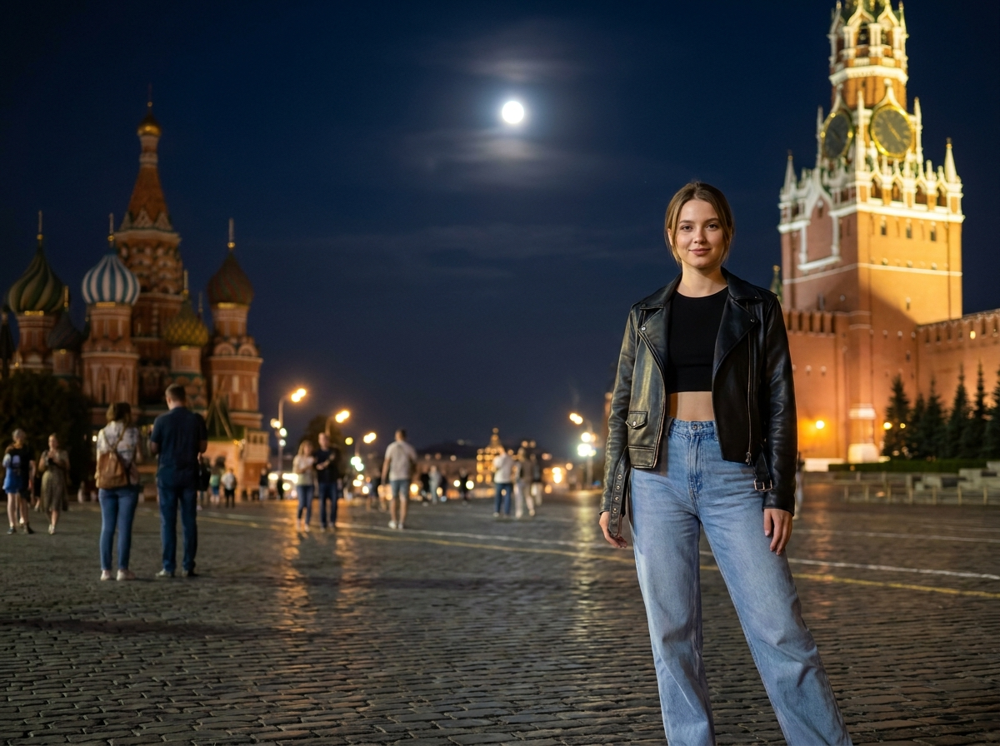
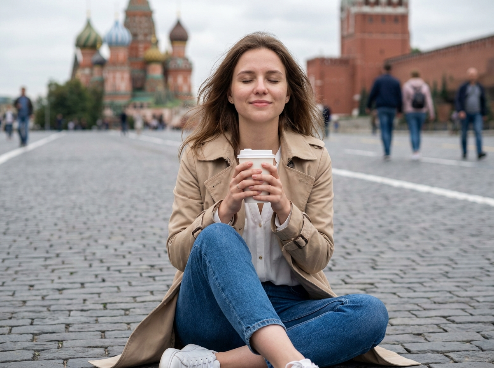
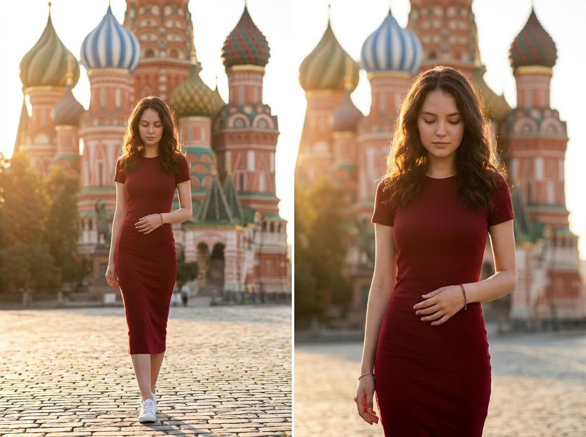
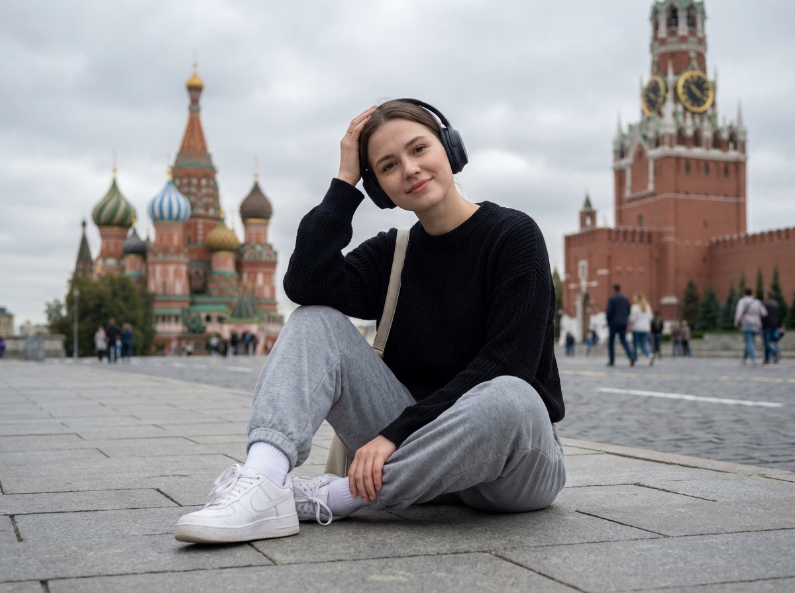
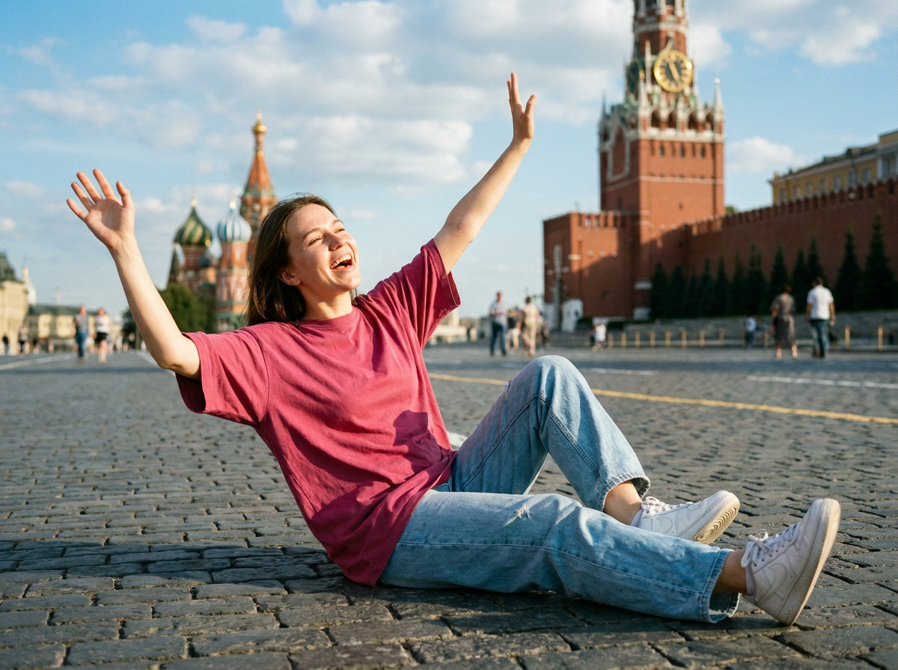
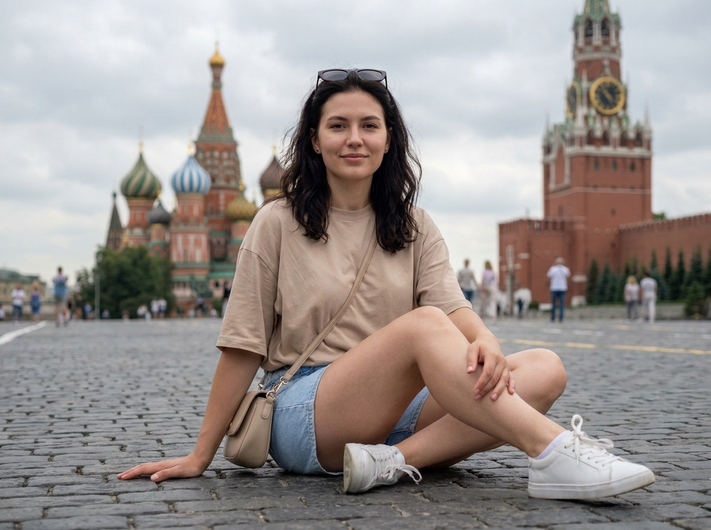
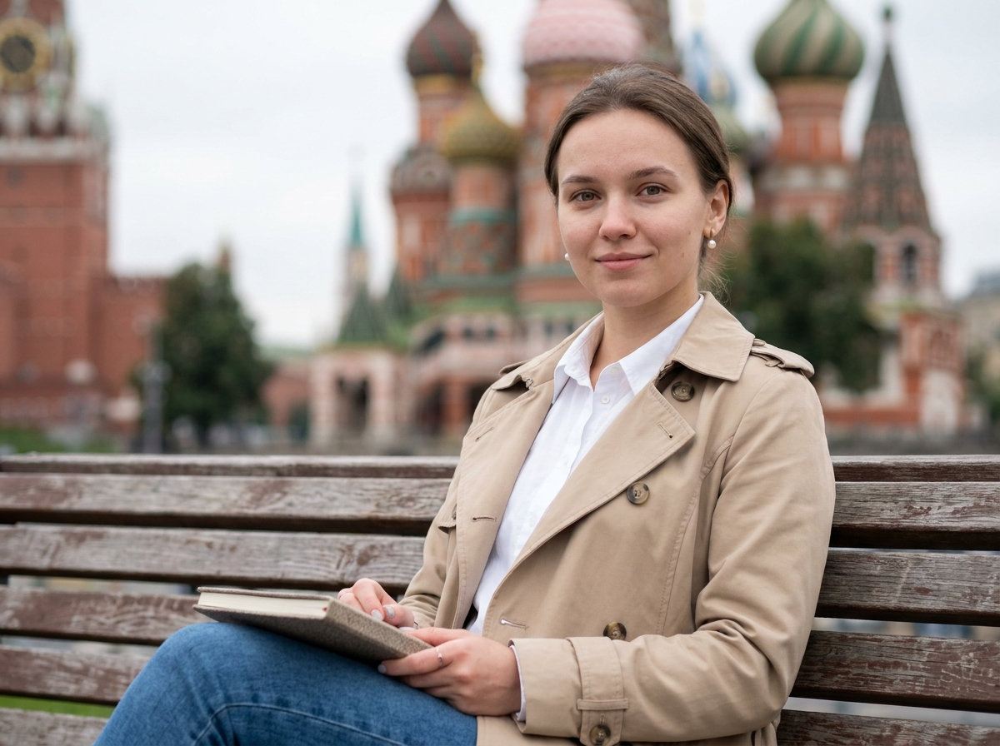
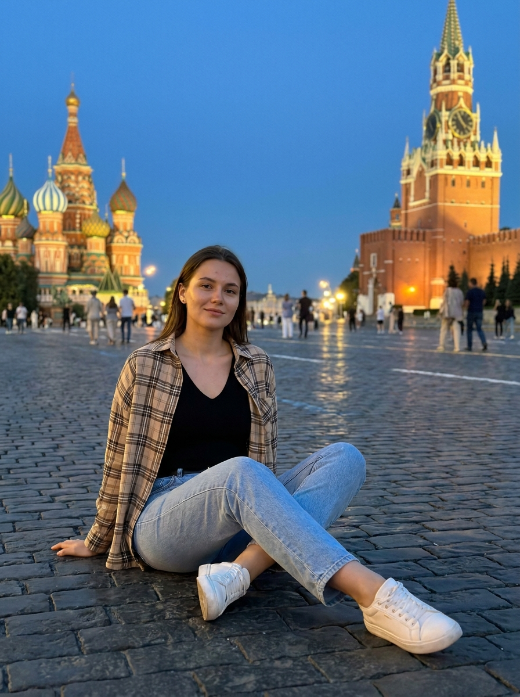
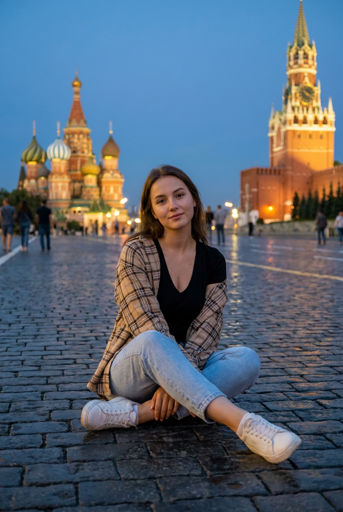

ИИ-фото на Красной площади: 10 промптов для нейросети

Обычная фотография на Красной площади не всегда выходит удачной: туристы попадают в кадр, свет меняется, а поза выглядит зажатой. Генерация помогает собрать нужную сцену без долгой подготовки — с выбранным настроением, одеждой и ракурсом.
В подборке — 10 промптов для нейросети: от ночного портрета в кожаной куртке до снимка с кофе, солнечной прогулки и расслабленной позы на брусчатке. Каждый текст можно использовать как основу и адаптировать под свой референс.
Как сгенерировать такое фото: пошагово
Нужен снимок анфас при ровном свете, лицо в кадре целиком, без тёмных очков и головных уборов. Разрешение от 1000 пикселей по короткой стороне. Чем чётче исходник, тем точнее модель повторит черты.
Выберите сценарий ниже и нажмите «Копировать» — текст уйдёт в буфер целиком, вместе с командой сохранения внешности. Эта команда стоит первой строкой и отвечает за то, чтобы на выходе было ваше лицо, а не случайное.
Кнопка «Сгенерировать» рядом с каждым промптом открывает модель в новой вкладке. Nano Banana Pro работает с референсом лица — в отличие от моделей, которые генерируют портрет с нуля и узнаваемость теряют.
Промпт — в поле ввода, портрет — через загрузку референса. Порядок значения не имеет, но без референса команда сохранения внешности работать не будет: модели нечего сохранять.
Для сторис и ленты берите 9:16, для превью и обложек — 4:3. Первый результат редко идеален: если поза или свет ушли не туда, поправьте соответствующую часть промпта и запустите заново. Обычно хватает двух-трёх итераций.
10 промптов для генерации
1. Кинематографичный низкий ракурс
Строго сохранить внешность по загруженному референсу: черты лица, пропорции, мимику и текстуру кожи без изменений. Вертикальный фотореалистичный кинематографичный кадр, снятый с низкой точки, с девушкой в центре переднего плана на Красной площади. Лицо — по загруженному референсу, с естественной мимикой и точными индивидуальными пропорциями. Она присела на одно колено: ближнее колено направлено к камере, вторая нога согнута, корпус развернут примерно на 3/4. Одна рука опущена и помогает удерживать равновесие, пальцы находятся рядом с коленом; другая полусогнута и лежит на бедре. Взгляд спокойный, чуть задумчивый, направлен к объективу. Волосы аккуратно уложены, у корней заметен объём, часть прядей убрана или собрана, видна натуральная текстура и мягкий блеск. Кожа естественного тона, с реалистичной пористостью, без пластиковой ретуши. На фоне — архитектура площади, выразительная перспектива брусчатки и мягкий дневной свет. Камера 35 мм, f/2.8, малая глубина резкости, высокая детализация.
2. Ночной образ на площади

Строго сохранить внешность по загруженному референсу: черты лица, пропорции, мимику и текстуру кожи без изменений. Фотореалистичная вертикальная фотография в формате Instagram, вечерняя Красная площадь с подсвеченной архитектурой и мокрыми или слегка блестящими камнями брусчатки. Девушка находится справа на переднем плане и остаётся в резком фокусе, корпус немного повернут к камере, на лице мягкая естественная улыбка. Черты лица соответствуют загруженному референсу, без изменения формы глаз, носа, губ и овала. Волосы аккуратно уложены, отдельные пряди обрамляют лицо. На ней чёрный кроп-топ с тонкими или обычными бретелями, свободные светло-голубые джинсы прямого кроя и тёмная кожаная куртка с заметным блеском, воротником и реалистичной фактурой. Руки расслаблены, одна может находиться возле кармана. Передать натуральные складки одежды, кожу без эффекта пластика и лёгкий макияж. Ночной городской свет, тёплые фонари, мягкое боке. Объектив 50 мм, f/1.8, ISO 800, выдержка 1/125 с.
3. Кофе и утренняя прогулка

Строго сохранить внешность по загруженному референсу: черты лица, пропорции, мимику и текстуру кожи без изменений. Вертикальный фотореалистичный портрет во время прогулки по Москве, на заднем плане узнаваема Красная площадь. Девушка сидит в нижней части кадра на серой брусчатке: ноги согнуты, корпус слегка развёрнут к объективу, поза спокойная и расслабленная. Голова немного наклонена, глаза закрыты, на лице умиротворённое выражение и едва заметная улыбка. В руках она держит простой белый бумажный стакан с кофе на уровне груди, без логотипов, надписей и читаемых символов. Лицо и пропорции соответствуют загруженному референсу. Волосы слегка волнистые, объёмные, несколько прядей растрепаны ветром. Кожа естественная, с видимой текстурой, макияж лёгкий и аккуратный. Добавить мягкий рассеянный дневной свет, натуральные тени и небольшое размытие фона, сохранив архитектуру площади узнаваемой. Объектив 85 мм, f/2, вертикальный кадр 4:5, высокая детализация.
4. Спокойный образ в полный рост

Строго сохранить внешность по загруженному референсу: черты лица, пропорции, мимику и текстуру кожи без изменений. Кинематографичная вертикальная фотография на улице Красной площади, девушка стоит в центре кадра в полный рост. Её лицо повторяет загруженный референс, выражение мягкое и немного задумчивое. Корпус развёрнут к камере на 3/4, одна рука естественно касается талии или живота либо слегка согнута перед телом, вторая свободно опущена вдоль бедра. Голова чуть наклонена вниз, взгляд уходит к земле или в сторону, губы расслаблены, без широкой улыбки. Часть волос лежит на плече, на солнце виден натуральный блеск отдельных прядей. Кожа реалистичного естественного оттенка, макияж минимальный: аккуратные брови, подчёркнутые ресницы, губы без яркого цвета. Одежда выглядит правдоподобно, с естественными складками и посадкой по фигуре. В фоне — брусчатка, исторические здания и мягкая солнечная перспектива. Объектив 50 мм, f/2.8, разрешение 4K, вертикальный формат 2:3.
5. Портрет с наушниками

Строго сохранить внешность по загруженному референсу: черты лица, пропорции, мимику и текстуру кожи без изменений. Фотореалистичный вертикальный портрет на Красной площади: девушка сидит на широких серых камнях брусчатки, слегка наклонившись вперёд. Ноги согнуты, одна рука поднята к затылку или наушникам, жест напоминает опору для головы; вторая рука может лежать на колене. Она смотрит в сторону камеры с мягкой улыбкой или спокойным выражением. Лицо — по загруженному референсу, с естественными пропорциями и без сильной ретуши. На девушке чёрный свитер, свободные серые джинсы или джоггеры, белые кроссовки и белые носки; через плечо проходит светлая сумка или ремень. Волосы уложены аккуратно: часть собрана, часть лежит на груди, отдельные пряди выглядят натурально. На заднем плане — яркие исторические здания Москвы, справа заметна Спасская башня Кремля, вдали читается храмовая архитектура. Дневной мягкий свет, реалистичная кожа, натуральные тени. Объектив 35 мм, f/2.8, вертикальный кадр 4:5.
6. Радость под солнцем

Строго сохранить внешность по загруженному референсу: черты лица, пропорции, мимику и текстуру кожи без изменений. Вертикальная кинематографичная фотография на Красной площади в солнечный день. Девушка сидит или полулежит на серой брусчатке: откинулась назад на локти и спину, колени согнуты и подняты, ступни стоят на камнях. Обе руки подняты вверх и слегка разведены, ладони раскрыты, будто она радостно приветствует кого-то или говорит «ву-ху». Голова немного запрокинута, лицо обращено к солнцу и в сторону камеры, глаза прищурены от яркого света, улыбка открытая и живая. Черты лица соответствуют загруженному референсу, без изменения внешности. Волосы прямые или слегка волнистые, с отдельными естественными прядями и лёгким движением от ветра. Кожа натурального оттенка, без чрезмерного сглаживания. Показать фактуру камней, тёплые солнечные блики и глубокие, но мягкие тени. Архитектура Красной площади остаётся узнаваемой на заднем плане. Объектив 28 мм, f/4, низкая точка съёмки, разрешение 4K.
7. Расслабленный туристический кадр

Строго сохранить внешность по загруженному референсу: черты лица, пропорции, мимику и текстуру кожи без изменений. Фотореалистичная вертикальная сцена с прогулки по Красной площади в Москве. Девушка сидит в центре переднего плана на серой брусчатке в расслабленной позе туристической фотосессии. Обе ноги согнуты, одна чуть вытянута вперёд, корпус немного повёрнут к камере. Одна рука лежит на колене или касается ремня сумки, вторая размещена естественно, без сложных жестов. Голова повернута к объективу, взгляд прямой, выражение уверенное и спокойное, губы складываются в лёгкую улыбку. Лицо и индивидуальные черты взять из загруженного референса. Волосы почти прямые, допустимы мягкие волны и аккуратный объём у корней. Кожа естественного оттенка, видна реальная текстура, макияж умеренный: выразительные глаза, ровный тон, нейтральные губы. На фоне — простор площади, исторические фасады и мягко размытые прохожие без узнаваемых лиц. Дневное освещение, объектив 50 мм, f/2.5, вертикальный формат 4:5.
8. Солнечный жест у лица

Строго сохранить внешность по загруженному референсу: черты лица, пропорции, мимику и текстуру кожи без изменений. Фотореалистичная вертикальная фотография на открытом пространстве Красной площади в Москве. Девушка стоит на серой брусчатке в центре кадра, поза динамичная и естественная: одна рука поднята ко лбу, ладонь раскрыта горизонтально и прикрывает глаза от солнца; вторая опущена, удерживает ремень или касается талии. Взгляд направлен в сторону камеры, лицо слегка прищурено, выражение задумчивое, с намёком на улыбку уголками губ. Черты лица повторяют загруженный референс. Волосы уложены мягкими волнами, несколько прядей свободно падают на плечи и грудь, на солнце виден натуральный блеск. Одежда — реалистичный модный повседневный комплект: короткий верх, свободные брюки или джинсы и лёгкая куртка, с правдоподобной посадкой и складками. Сохранить естественную кожу, фактуру волос и живой солнечный свет. Объектив 35 мм, f/2.8, выдержка 1/500 с, высокая детализация.
9. Портрет с собором

Строго сохранить внешность по загруженному референсу: черты лица, пропорции, мимику и текстуру кожи без изменений. Вертикальный фотореалистичный портрет по грудь или до плеч, девушка сидит на лавочке в районе Красной площади. Кадр слегка акцентирует руки, но главным объектом остаётся лицо по загруженному референсу. Она повернута к камере в лёгком полуобороте, голова чуть наклонена, взгляд прямо в объектив, выражение открытое и уверенное, улыбка мягкая. На заднем плане сильное художественное боке: доминирует собор Василия Блаженного, узнаваемый по крупным куполам, красно-белому кирпичному орнаменту, зелёно-синим куполам и арочным элементам. Архитектура размыта, но цвета и формы хорошо читаются. Волосы аккуратно уложены, с естественными прядями и объёмом. Кожа натурального тона, заметна реальная текстура, макияж сдержанный. Свет мягкий дневной, фоновые огни превращаются в круглое боке. Объектив 85 мм, f/1.8, малая глубина резкости, вертикальный формат 4:5.
10. Вечерняя поза на брусчатке

Строго сохранить внешность по загруженному референсу: черты лица, пропорции, мимику и текстуру кожи без изменений. Кинематографичная вертикальная фотография вечерней прогулки по Красной площади. Девушка сидит в центре переднего плана на серой брусчатке, ноги согнуты, одна нога расположена ближе к объективу, корпус повёрнут вправо примерно на 3/4. Она опирается руками рядом с коленями или держит край одежды; обе руки полностью попадают в кадр и имеют естественную анатомию. Голова повернута к камере, взгляд спокойный и уверенный, выражение мягкое, слегка задумчивое, с небольшой естественной улыбкой. Лицо соответствует загруженному референсу. Волосы аккуратно уложены, отдельные пряди лежат у лица. Макияж дневной: выразительные глаза, ровный тон кожи, натуральные брови и нейтральные губы. Не использовать пластиковую ретушь и beauty-фильтр. На фоне — вечерняя подсветка исторических зданий, тёплые фонари, глубокие синие тени и мягкое размытие прохожих. Объектив 50 мм, f/2, ISO 640, выдержка 1/125 с, разрешение 4K.
Что важно учесть в этом стиле
Красная площадь лучше работает как узнаваемый фон, а не как набор случайных исторических зданий. Если в кадре нужны Спасская башня или собор Василия Блаженного, назовите их отдельно и укажите, где они находятся относительно модели. Для портрета с архитектурой подойдёт объектив 50–85 мм, для позы в полный рост и выразительной перспективы брусчатки — 28–35 мм.
Фотореализм держится на мелочах: натуральной текстуре кожи, отдельных волосках, складках одежды, контакте обуви с камнями. Для ночной сцены добавьте ISO и выдержку, а для солнечного кадра — направление света, прищур и мягкие тени. Вертикальный формат 4:5 или 2:3 сразу задаёт композицию под публикацию.
Идеи для вариаций
- Замените дневной свет на синий час и добавьте отражения фонарей в мокрой брусчатке.
- Сделайте осеннюю версию с длинным пальто, шарфом и опавшими листьями без перекрытия архитектуры.
- Добавьте белый зонт после дождя, сохранив свободную руку и естественную позу.
- Попросите нейросеть снять сцену на рассвете с почти пустой площадью и длинными мягкими тенями.
- Перенесите акцент на детали: стакан кофе, ремень сумки, кроссовки или украшения в кадре.
Как собрать свой промпт
Сначала задайте формат и место: вертикальный кадр, Красная площадь, нужный участок архитектуры. Затем опишите модель — положение тела, направление взгляда, выражение лица, волосы и одежду. После этого добавьте свет, время суток, объектив, диафрагму и глубину резкости.
Референс лучше подключать отдельно, а в тексте указывать, что лицо должно соответствовать исходному изображению без изменения индивидуальных черт. Если генератор плохо справляется с руками, упростите жест: одна рука на колене, вторая рядом с корпусом. Для стабильного результата подготовьте 4–8 вариантов, а затем уточняйте только один параметр за раз.
Ошибки, из-за которых кадр не получается
- Слишком много объектов. Когда в одном запросе смешаны башня, собор, лавочка, кофе и десятки прохожих, архитектура и лицо начинают конкурировать.
- Неясная поза. Опишите, какая нога ближе к камере и где находятся руки, иначе модель может добавить лишние пальцы или вывернуть суставы.
- Противоречивый свет. Не сочетайте яркое полуденное солнце с ночными фонарями и мягким пасмурным освещением.
- Общие слова вместо параметров. «Красивое фото» не задаёт результат; лучше указать объектив, формат, диафрагму, точку съёмки и глубину резкости.
- Перегруженная ретушь. Формулировки про идеальную кожу часто превращают лицо в пластиковую маску, поэтому просите натуральную текстуру и умеренный макияж.
Частые вопросы
Как сделать такое ИИ-фото бесплатно?
Можно попробовать Kandinsky и Шедеврум: они подходят для генерации сцен по тексту, но точное сохранение лица по референсу может быть ограничено. Krea AI и Arena.ai дают больше инструментов для работы с изображением и вариациями, однако доступность функций, число попыток и качество референса зависят от текущих условий сервиса. Для стабильного сходства используйте чёткий исходный портрет при хорошем освещении и проверяйте результат в нескольких генерациях.
Как сохранить лицо с загруженного фото?
Добавьте референс отдельным изображением и опишите только нужную сцену, не перегружая запрос повторным портретным описанием. Укажите, что индивидуальные черты, пропорции лица и естественная мимика должны сохраняться. Лучше использовать фото анфас или в лёгком полуобороте без очков, сильных теней и фильтров.
Почему нейросеть искажает руки и позу?
Сложные жесты и перекрещенные конечности часто приводят к ошибкам. Опишите положение каждой руки отдельно, уточните, какая нога ближе к камере, и не соединяйте в одной сцене несколько взаимоисключающих действий. Если проблема повторяется, сначала сгенерируйте простой кадр, а затем меняйте позу через редактирование.
Как сделать Красную площадь узнаваемой?
Назовите конкретный ориентир: Спасскую башню Кремля, собор Василия Блаженного, серую брусчатку или исторические фасады. Укажите расположение объекта — справа, за плечом, в размытии на заднем плане. Для портрета используйте сильное боке, но оставьте архитектурные цвета и характерные формы достаточно заметными.